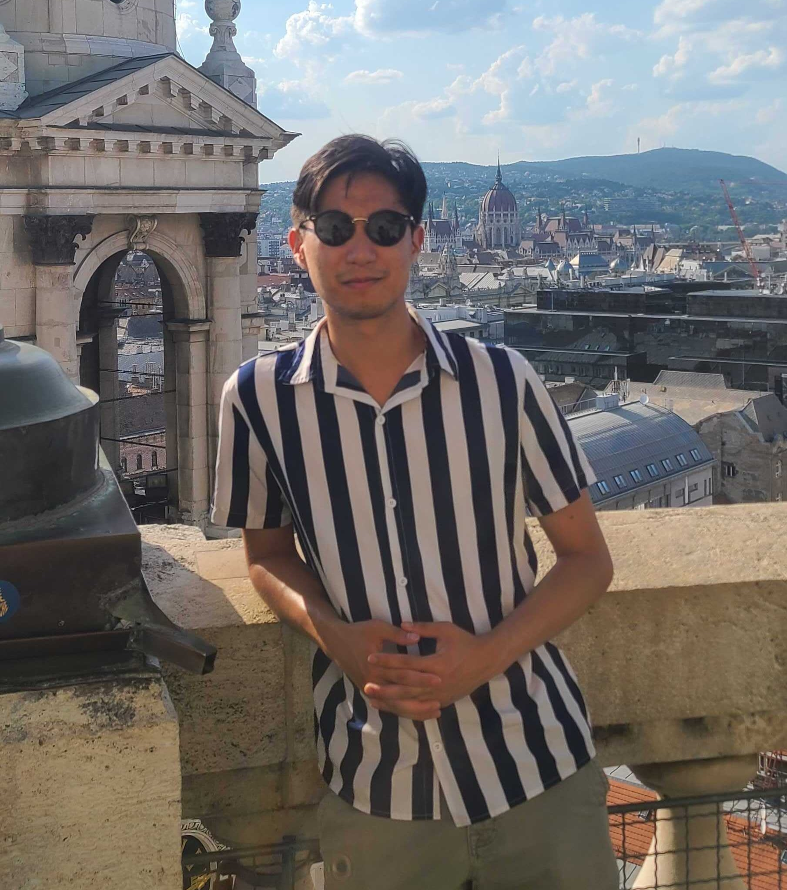

|  |
Avery (Hee-Woon) RyooI am a graduate student at Mila - Quebec AI Institute and the Université de Montréal, where I study Computer Science with a specialization in Artificial Intelligence. I have the fortune to be advised by Dr. Matthew Perich and Dr. Guillaume Lajoie. Check out their respective labs here and here! I am a graduate student interested in the mechanisms of learning in artificial and biological brains. In particular, I am intrigued by how these systems can rapidly learn and generalize to new tasks given little to no information — an ability that is simultaneously characteristic of natural intelligence and elusive to current AI systems due to the catastrophic forgetting phenomenon. To this end, I aim to mathematically elucidate how different paradigms of task learning (e.g., continual, meta, in-context, etc.) are affected by factors such as learning dynamics, compositional representations, and memory. I believe that these insights can help us build more interpretable and sample-efficient AI frameworks — a crucial step in mitigating the widening resource disparity in an era of increasingly large models. Before my graduate studies, I studied biomedical engineering at the University of Waterloo, during which I completed several internships in data science, computer vision research, and brain-computer interfaces. Outside of research, I am passionate about travel, coffee, professional sports (NBA, soccer, F1), bouldering, and spicy food. |